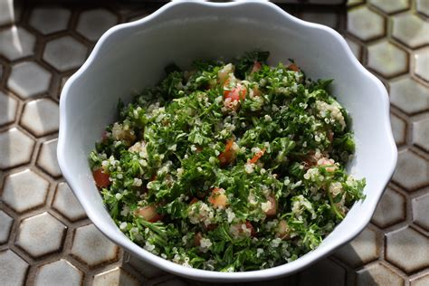

Home
Tabouli

Description
Tabouli (tabbouleh, taboulah, ) is a Levantine salad made from cracked wheat, tomato, parsley, mint, and onion. It is seasoned with olive oil, lemon juice, salt, peper, and garlic.
Tabouli is traditionally served as an appatizer in the Arab world. However, it is a filling and satisfying dish that can be served independently as a meal.
- 1 cup crackec bulgar wheat
- 1 teaspoon fine sea salt, divided
- 1 1/2 cups boiling water
- 1 clove garlic
- 1/3 cup extra-vergin olive oil
- 1/4 cup fresh lemon juice
- 1/2 cup fresh chopped mint
- 1/2 teaspoon freshly ground black pepper
- 1 bunch flat-leaf parsley
- 4 tomatoes
- 1 English cucumber (optional)
Steps
- Gather the ingredients
- Put the bulgur in a medium bowl and sprinkle it with 1/2 teaspoon of the salt. Add the boiling water, cover, and let sit until soft (20 to 60 minutes depending on the brand)
- While the bulgar sits make the dressing. In a small mixing boul combine minced garlic, olive oil, and lemon juice, remaing salt, and pepper
- Remove parsley and mint leaves from stems. Roughly chop the leaves
- Core and chop Tomatoes
- Peel, seed, and chop cucumber
- Combine ingreadients: When all water is absorbed into bulgur wheat add parsley, mint, tomato, and cucumber. Add dressing and lightly toss.
- Serve immediately or cover and chill over night